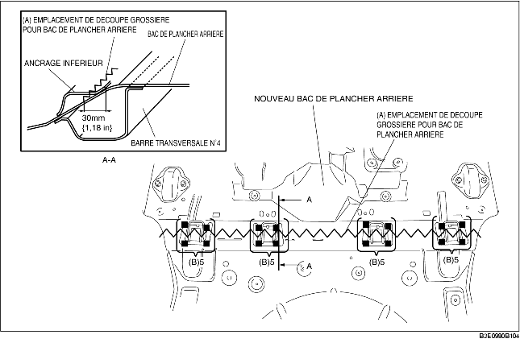

1. Pour préparer la repose, découper la zone (A) sur le nouveau bac de plancher arrière, percer aux 20 emplacements indiqués par (B) puis déposer l'ancrage inférieur.

2. Percer aux 11 emplacements indiqués par (A).
3. Séparer l'ancrage inférieur à la jointure à l'aide d'un burin ou d'un outil similaire et plier-le vers le haut pour faciliter la dépose.
4. Appliquer un produit d'étanchéité sur les zones, où le chevauchement des deux extrémités des parties actuelles et nouvelles sera soudé. Coller les sections à souder puis souder (en bouchon) aux 18 emplacements indiqués par (D). Souder (à congé) le long des joints de l'ancrage inférieur et des pièces nouvelles et actuelles, aux emplacements indiqués par (E).
5. Souder les emplacements de soudure restants et déposer le bac de plancher arrière.